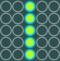
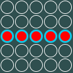
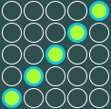
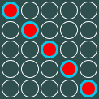

Гомоку — настольная логическая игра для двух игроков. На квадратной доске размером 19×19 (в традиционном варианте), 15×15 (в современном спортивном варианте) или более пунктов. Игроки поочерёдно выставляют камни двух цветов. Выигрывает тот, кто первым построит непрерывный ряд из пяти или более камней своего цвета по вертикали, горизонтали или диагонали.
   